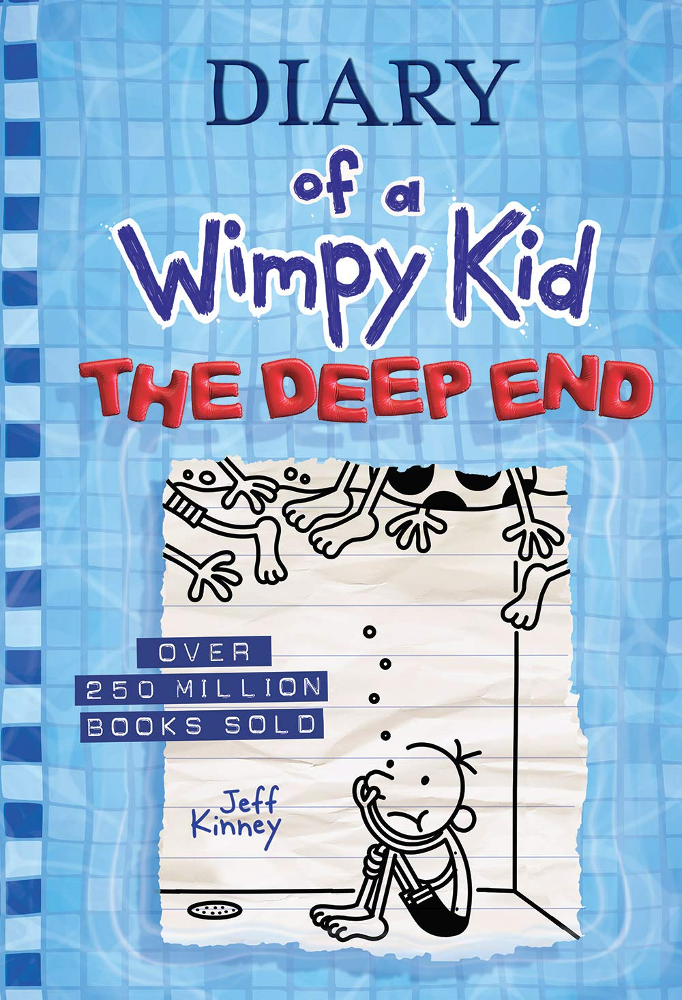
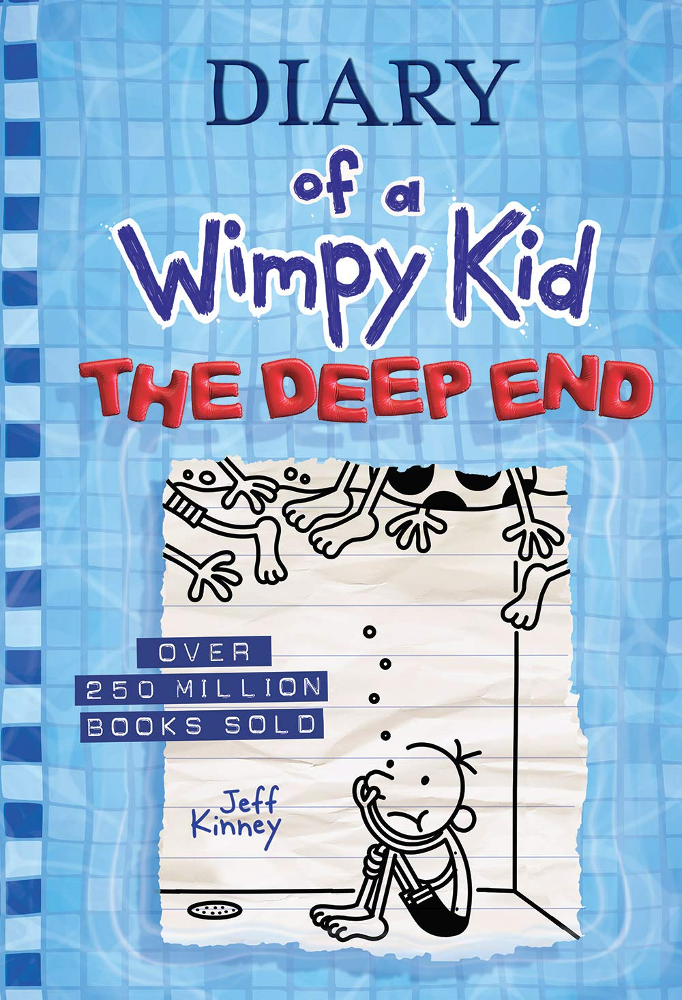

My Favorite Hobby is...
Reading Diary of a Wimpy Kid Books
Okay really it is just reading books but Diary of a Wimpy Kid books are so great that they deserve a catagory of their own. So what is Diary of a Wimpy Kid? Greg Heffley the main character begins the Diary of a Wimpy Kid by stipulating that it is definitely not a “diary,” because he is afraid that other kids would make fun of him if they knew he was writing about his feelings. At the beginning of the new school year, Greg highligts that “this whole popularity” thing has become so much more complicated, now that he’s in middle school. Greg knows that he is only “around 52nd or 53rd” most popular in his school, but he wants to move up in the school hierarchy. Though his best friend Rowley does not care about popularity ect. In the first few months of school, Greg engages in various schemes to try to become more popular and raise his social status but has failed thanks to Patty Farrel. Greg himself was mean to Patty in kindergarten so maybe Patty was trying to get back at Greg. He tries to open a haunted house in Rowley’s basement, but gets in trouble with Rowley’s dad who thinks Greg is a bad role model to his son. There are other problems in Greg’s life too. He lives in terror of “the Cheese,” a moldy bit of cheese left out on the basketball court that will condemn anyone who touches it to the “Cheese Touch” and a life of social ostracization. Greg loves playing video games, but his dad is always telling him to go outside and enjoy the sunshine or punishing him by taking away his video gaming time. And perhaps worst of all, Greg’s mom makes him audition for the school play. Greg is cast as a tree in The Wizard of Oz, but he manages to sabotage and shut down the entire performance after he pelts the lead actress Patty Farrel with apples, breaking her glasses. At Christmas, Greg is dissatisfied with his gifts and jealous of his younger brother, Manny, who he thinks gets an unfair amount of attention from their parents. In his ongoing quest to gain a position of authority in the middle school social hierarchy, Greg and Rowley volunteer for the Safety Patrol, a group of students who walk the kindergarteners home from school. Greg's older brother Rodrick only adds to his problems though. As he pulls a number of hillarious pranks he owns a band called Loaded Diaper which is actually spelled on his band equipment Löded Diper but Rodrick is terrible at spelling. His band is also really awful and Greg can't stand being at home when they practice. And perhaps the thing Greg is worried about the most is if Rodrick tells the whole world about Greg's secret which was the time he accidentally went into the ladies bathroom at his grandpa's retierment home. Rodrick did end up telling Greg's secret but it backfired and ended up making Greg the most popular kid at school in a good way. But even Rodrick has a problem himself. His school had a Winter talent show and if Rodrick won the Musical prize he would be able to work with his band full time. He originally asked Greg to record a video to send to the recording companies but Greg refused ho their mom recorded the video. Unfortunatly she really didn't do a good job recording but the talent show was also recording his band. Except when Rodrick's drum solo came his Mom started dancing. Lots of people saw the "Dancing Mom" and posted it on social media and just like that it was around the world. And even more Rodrick Heffley is known as the drummer of Dancing Mom and Greg from the bathroom incident is the most popular kid at school and even got a nickname called the "Stealthinator". Though Greg had some downfalls and any which way the stories go it is hard to tell if he gets a happy ending...


 

.jpg)
All 17 Wimpy Kid Books
The Heffley Family
The Weirdest Family in Town
Okay I don't wan't to be mean and all but it's true.
The Heffley Family has 5 people and 2 pets. Each and every one of the Heffleys is extreamly different from each other. But somehow they are still able to get along (well almost).
So lets start with Greg you already know him as the main character of the series. He is also the middle child of the family. If you are a Heffley this is bad. You get teased by an older brother and tattle tailed by a younger one. So lets just say that Greg is having a misrable life right now and his 2 siblings are the ones who have the fun.
And right here we encounter Rodrick Heffley. He is currently 19 yers old and has been really a huge problem to Greg. On top of owning his own band and playing a ton of pranks on Greg he also is basically trying to do pretty much everything he can to make Greg's life miserable. Or some other secret desire. We don't know. As much of a jerk Rodrick is and he is the 2 share a deep love for each other. And as nasty Rodrick is he is absolutly nothing compared the worst Heffley and 3 year old in the world. Manny Heffley.
Okay I don't know if I have enough room to write about how bad this toddler is but you can find out more by actually reading the book. Okay so for starters Manny is the kid who can do whatever he likes. He can ruin Greg's bedroom door, stuff a cookie into his video game system and say "I'm only 3", bring in a nightmare in the form of a pig into the house, and worst of all he gets away with it! Yes really! Even if he burned down his country he would get away with it. Because he has 2 parents who pamper him so much that it has turned him into a spoiled toddler. So parenting advice DON'T PAMPER YOUR KIDS TOO MUCH.
Okay so Manny I did not explain exactly how bad you are so for now I will leave you aside. Now let me introduce you to the dad and mom of the family. Greg's Dad is a very nice guy in general but even he has some big problems. He does not exactly like teenagers and he forces Greg and Rodrick to exercise and get sent to some academy to make them more mannered. The Mom is actually a lot more to explain. She continualously forces the kids to put down their electronics and read or exercise. She is also the main pamperer of Manny. She also tries to get the family do spend time with each other with ideas from her Family Frolic magazine.
So that is basically the Heffley family. If you want more detail read the book!


Reviews
I don't know what they think but I enjoyed it
My Review
Diary of a Wimpy kid is great if you are a
person who does not like reading books. You
get great laughs and stories to get you
hooked up to the topic for long.
So I would give it a 5 star review for
ages 8-14
Click the links below to access reviews from different sites
Common Sense MediaThe Guardian
Read Brightly